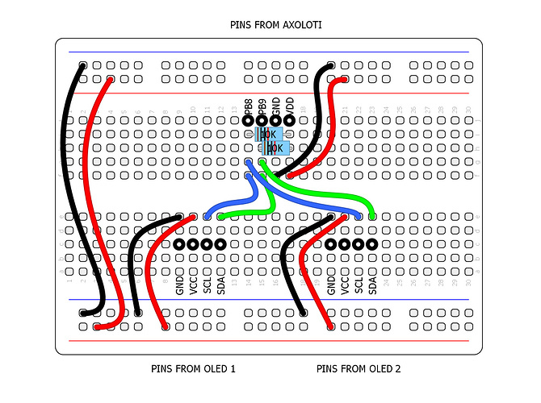

Yessssss new oled objects! 
SPI/I2C OLED display
lokki
#117
@SmashedTransistors just tried those new objects, great! thanks so much for the bars and full scope mode!!!
jaffasplaffa
#118
Argh... still got a bunch of displays lying around here, which I never got installed.......
Just too scared to try to install them, seriously afraid of breaking another board.... 
jaffasplaffa
#120
No, not by adding OLED, it was something else. Dont really know what happened to the board. I have one more now that has got the "low output issue". I am thinking this one can be fixed by adding a resistor or something, I read about that somewhere. But again, I rally dont like to tinker with these things cause its so easy to break, if you dont know what you are doing. And I really don't, when it comes to the hardware side.
I have very very little experience with building hardware stuff. I did build one of the Modular thing Axo control boards, which worked great........... for while. But after a while I started to get a lots of humming from the main output on Axoloti, so I had to take the Modular thing board off again and then the humming stopped.
So back to square one.
For the OLEDS I havent even tried. I got 5 of them, but I just cant get myself to do. If there was a video of someone who did the whole thing I would feel comfortable trying, but al the info is in bits and pieces, so havent really tried.
spacelordmother
#121
What's the "low output issue?"
Totally get that -- it's definitely scary screwing around with things you're unsure of when there's a chance of frying something.
Do you have a breadboard and wires? Does my diagram from the other thread help?

How's your soldering? The hardest part for me in this was moving the SMD resistor on one screen to get it readdressed.
WE WILL GET YOU THROUGH THIS 
jaffasplaffa
#122
@spacelordmother thanks man I highly appreciate your effort. I am just really not comfortable with this stuff.
But I got a freaking Weller soldering iron, which cost more than the Axo boards I want to solder on  haha So I got the right tools, I think.
haha So I got the right tools, I think.
But about my soldering skilles. Only think I really soldered was the Axo control board, which as you can read in my first description only lastet for a while, before it started failing, which resultet in humming on the output of Axoloti.
About the "low output issue":
The first badge of Axolotis had some issues that could cause the output to go almost mute.
There is an example of it here and how to fix it:
I dont have a breadboard. Ill see if I can find one. It does seem like a less destructive way of learning this
And thanks I appreciate that you want to help
spacelordmother
#123
For sure! Had it not been for the kindness and patience of others I wouldn't be where I am... and I still have a looooong way to go!
Also, this is your friend: https://www.amazon.com/WEmake-WM-SP4-Solder-Sucker-desoldering/dp/B0002KRAAG
jaffasplaffa
#124
I think I have one of those suckers too, so getting closer.
But ill check up on the breadboard, I think I have to buy it online and wait a while for it, cause my city doesnt really have any nice electronic shops that sells breadboards and stuff like that.
I am mostly into the patching part, that I feel super comfortable about, cause its almost impossible to break that way, hehe That makes me feel safe experimenting with it.
SmashedTransistors
#125
When I receivd my first Axoloti, i had not practiced soldering for many years.
So I re-practice it on old electronic scraps (for example, an old non working remote control), before I do serious stuff on the axoloti. You should practice with the solder sucker before using it on the Axoloti.
SmashedTransistors
#126
I'm not sure the resistors are mandatory as the gpios have internal pull up resistors 
lokki
#127
hmm, i tried just that now and it did not work. will have to investigate further. @SmashedTransistors i used your OLED128x64nice help patch, should the second display (on 0x3D) also work when the first display is not connected? i am not sure this is the case, so i am not sure if my tests are flawed. i also tried to just change the address on your objects, with only one display and one object connected and i can select 0x3c or 0x3d and the display works...
SmashedTransistors
#128
This should work with one instance per OLED display set on its i2c address.
If you have troubles, you can describe what you do, i have a pair of 1"3 OLEDs and can try it at home.
lokki
#129
sorry, i was not very clear. the issue is with the display that has no address selector.
i will investigate further, but i think i will have to cut a trace on the pcb as per this post:
https://forum.arduino.cc/index.php?topic=248663.0
i was just not sure, if your help patch would show the 0x3d display even when no 0x3c display was connected. (the lower OLED object) when i tried with one OLEDnice object of yours, i could set the addressfield to 0x3c or 0x3d and it worked anyways. (with a display set to 0x3c)
long story short, let me first try that pcbhack
lokki
#130
@SmashedTransistors amazing!
i have a 0.91 inch 128x32 pixel here and it works as well with your library! the funny characters are a custom font, it's all as it should be.
i kind of expected, that it would only display 2 lines, but it seems the two lines are internally scaled. hence my question: would it be much work to add a double size option? so that one line occupies two lines?
{kind=link}
Saberhagen
#131
Hi @lokki, I experienced the same. I changed the position of both resistors and there was no sign of output. Investigated further and found this topic on github containing the same question. Someone commented:
the "1" and "2" positions near the connector have some SMD resistors connected either to Vdd or GND.
So changing the 1 from Vdd to GND position should change the I2C address.
When I tried to solder the resistors back in place, the board became toast 
The copper solder pad came loose from the board. I guess soldering smd resistors is not my thing.
I hope the solution from the github topic will help you! I've ordered two new OLED screens with a simple address selector.
[ps: I will try to change the address using this solution on the one that's still working, but I have sooo little time to do these things]
lokki
#132
i did that and it did not help.
as per the arduino forum post i linked to, the pin number 15 of the ribbon cable (which apparently is the address selector) is hardwired to gnd. i verified this, when i had both resistors removed. so the only thing to do really is to cut the trace there and solder a thin wire from pin 15 to vcc. after looking at the board i have to say, i am not comfortable doing that (or more to the point, i rather order an oled with address selector then spending time fiddling with such small stuff )
SmashedTransistors
#133
Wow that scaling on the 128x32 OLED is funny.
I wonder if all 128x32 display behave this way.
It will be a little tricky to hack the 128x64 OLED to scale up the characters.
lokki
#134
hmm, ok. i thought it would be about using the same text line twice, once the lower four bits x4, once the higher four x 4. the horizontal scaling could stay the same i guess.
i guess all the ssd1306 128x32 displays behave the same
SmashedTransistors
#135
In the the 128x64 display, pixels are arranged by horizontal bands of 8 pixels (called pages).
The 128x64 object I have written calculates each band according to the incoming strings or scope, thus i avoided the use of a complete buffer (sram2 is quite precious). That's why it can be tricky to modify it.